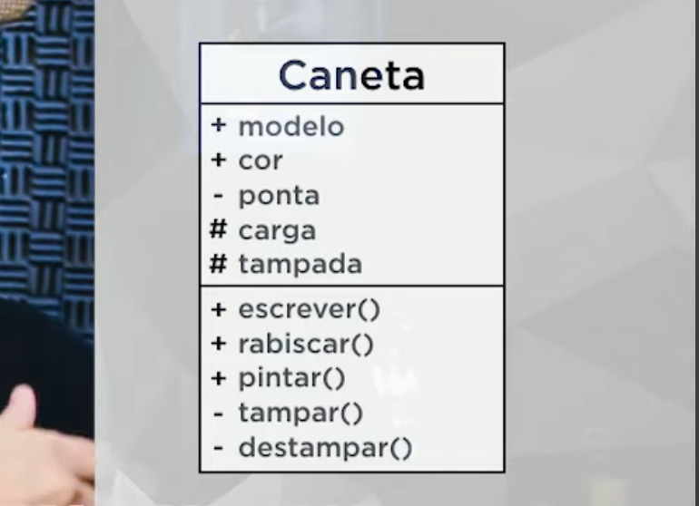

Aula 10 - Visibilidade
A visibilidade define o nível de acesso aos atributos e métodos de uma classe.
A visibilidade é um dos conceitos fundamentais da Programação Orientada a Objetos, pois define o nível de acesso aos componentes internos de uma classe, ou seja, seus atributos e métodos. Em outras palavras, a visibilidade determina quem pode acessar ou modificar determinadas partes de um objeto, sendo essencial para garantir organização, segurança e controle no desenvolvimento de sistemas.
A visibilidade pode ser representada por três níveis principais: público, privado e protegido . Esses níveis indicam o grau de acesso permitido a cada elemento da classe.
- Público
- Privado
- Protegido
Público (public)
Acesso livre em todo o sistema.
Pode ser acessado de qualquer lugar.
Privado (private)
Acesso restrito exclusivamente à própria classe.
Somente a classe atual.
Protegido (protected)
Acesso na classe e em suas subclasses.
Herança permitida.
Uma forma simples e didática de compreender esse conceito é por meio de analogias do cotidiano. Imagine um telefone: um telefone público pode ser utilizado por qualquer pessoa; um telefone privado, como um celular pessoal, só pode ser utilizado pelo seu dono; e um telefone protegido, como o telefone de uma residência, pode ser utilizado por um grupo restrito de pessoas, como os membros da família. Essa analogia ajuda a entender como os níveis de acesso funcionam na prática.
- Telefone público → acesso livre
- Telefone privado → acesso restrito
- Telefone protegido → acesso parcial
Na programação:
No contexto da programação, um atributo ou método definido como público pode ser acessado por qualquer outra parte do sistema. Já um atributo ou método privado só pode ser acessado dentro da própria classe, impedindo o acesso direto por outras classes. Por sua vez, o modificador protegido permite o acesso tanto pela classe quanto por suas subclasses, conceito que será aprofundado com o estudo de herança.
Além de definir o acesso, a visibilidade também influencia diretamente no uso dos objetos. Ao criar um objeto a partir de uma classe, apenas os atributos e métodos públicos podem ser acessados diretamente. Elementos privados ou protegidos não podem ser manipulados diretamente fora da classe, exigindo o uso de métodos específicos para acesso ou modificação, o que reforça o princípio do encapsulamento.
Para ilustrar esse comportamento, considere uma classe com diferentes níveis de visibilidade. Ao tentar acessar atributos públicos, o acesso será permitido normalmente. No entanto, ao tentar acessar atributos privados ou protegidos diretamente, o sistema não permitirá essa ação, pois ela viola as regras de acesso definidas pela classe. Isso demonstra que a visibilidade atua como um mecanismo de controle, impedindo acessos indevidos e protegendo o funcionamento interno do objeto.
Outro exemplo importante apresentado é o de um controle remoto. O usuário pode interagir com os botões externos do controle (parte pública), mas não tem acesso direto aos componentes internos, como circuitos eletrônicos (parte privada). Há ainda elementos que fazem a comunicação entre o controle e a televisão, que podem ser entendidos como protegidos, pois não são acessíveis ao usuário comum, mas são essenciais para o funcionamento do sistema.

Por quê a visibilidade é tão importante?
Compreender a visibilidade é essencial para o desenvolvimento orientado a objetos, pois ela não apenas define quem pode acessar o quê, mas também contribui para a construção de sistemas mais seguros, organizados e fáceis de manter. Esse conceito será ainda mais aprofundado com o estudo de encapsulamento e herança, que utilizam diretamente os modificadores de acesso para estruturar o comportamento dos objetos.
- Segurança
- Organização
- Prevençao de Falhas
- Encapsulamento
Impede que dados críticos (como saldo bancário) sejam alterados diretamente de fora da classe, evitando estados inválidos ou inconsistentes.
Define claramente o que é interno (implementação) e o que é externo (interface pública), tornando o código mais limpo e fácil de manter.
Restringe o acesso a partes sensíveis do código, reduzindo drasticamente a chance de bugs causados por uso incorreto de atributos internos.
É a base do encapsulamento em POO — um dos 4 pilares fundamentais. Controlar a visibilidade é controlar o contrato da classe com o mundo.